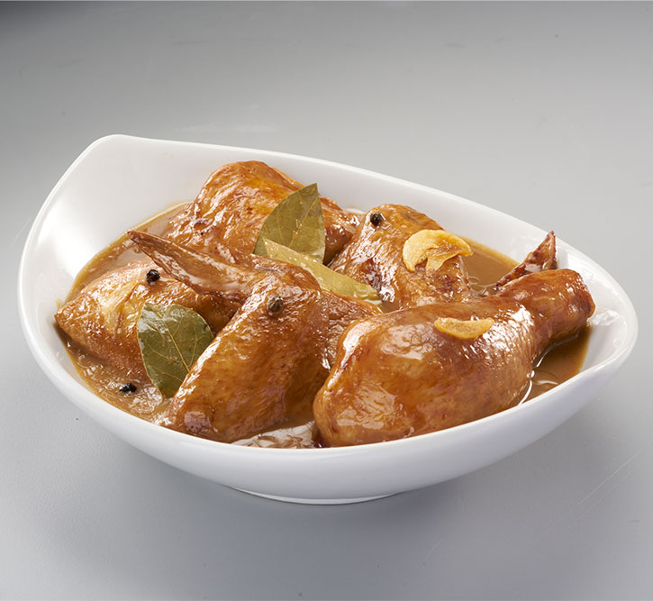

Chicken Adobo Recipe

A delicious bowl of chicken adobo!
Ingredients
Chicken and Marinade
- 750g / 1.5 lb chicken thigh fillets
- 3 garlic cloves , minced
- 1/3 cup (85ml) soy sauce , ordinary all purpose or light (not dark soy sauce,)
- 1/3 cup + 2 tbsp white vinegar
- 4 bay leaves (fresh) or 3 dried
Cooking
- 2 tbsp oil
- 3 garlic cloves , minced
- 1 small brown onion , diced
- 1 1/2 cups (375 ml) water
- 2 tbsp brown sugar
- 1 tbsp whole black pepper (sub 2 tsp coarse cracked pepper)
Serving
- 2 green onions/scallions , sliced (garnish, optional)
Steps
- Combine Chicken and Marinade ingredients in a bowl. Marinate for at least 20 minutes, or up to overnight.
- Heat 1 tbsp oil in a skillet over high heat. Remove chicken from marinade (reserve marinade) and place in the pan. Sear both sides until browned – about 1 minute on each side. Do not cook the chicken all the way through.
- Remove chicken skillet and set aside.
- Heat the remaining oil in skillet. Add garlic and onion, cook 1 1/2 minutes.
- Add the reserved marinade, water, sugar and black pepper. Bring it to a simmer then turn heat down to medium high. Simmer 5 minutes.
- Add chicken smooth side down. Simmer uncovered for 20 to 25 minutes (no need to stir), turning chicken at around 15 minutes, until the sauce reduces down to a thick jam-like syrup.
- If the sauce isn't thick enough, remove chicken onto a plate and let the sauce simmer by itself – it will thicken much quicker – then return chicken to the skillet to coat in the glaze.
Home